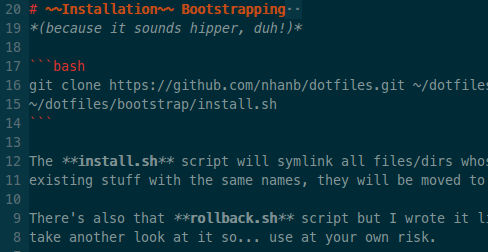
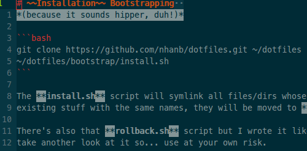

Enable italic text inside vim inside tmux inside gnome-terminal
2023 Update: I now use kitty terminal which has powerful tab & split functionalities so tmux is no longer necessary for my “unix IDE” use case. Removing tmux also means removing a whole class of compatibility issues, making it much nicer to work with terminal programs. I recommend giving it a try.
Update: As egmont pointed out in the comments: setting TERM=xterm inside tmux is
discouraged and will cause wrong behavior in some programs. Changing all instances of
xterm-256color to screen-256color in this tutorial should work, but I’m no longer using
gnome-terminal so I can’t test that. I’m now a KDE convert by the way; italic text Just
WorksTM with Konsole. Neat, eh?
It has bothered me for a while what I can’t get terminal vim to display italic text. It might seem trivial but it makes a world of difference when I’m editing Markdown or HTML. Here’s what gvim looks like:

Neat, right? This is what terminal vim shows:

I don’t know about you, but the second one looks catastrophically messy and counterintuitive to me. Let’s change that. My current setup is terminal vim running inside a tmux session on gnome-terminal. Let’s go through these things.
gnome-terminal#
Note that older versions of gnome-terminal do not support italic text. To check if your terminal
does support it, run this command:
$ echo -e "\e[3m foo \e[23m"
If your version of gnome-terminal supports it, an italic foo will appear. If not, upgrade it! :)
vim#
You may have noticed: [3m and [23m are the special sequences to start and stop printing
italic text. Unfortunately, vim doesn’t care about those. It expects sitm and ritm instead.
We’ll need to map them manually. Simply use these commands:
# Download a custom terminfo that defines sitm and ritm
$ wget https://gist.githubusercontent.com/sos4nt/3187620/raw/8e13c1fec5b72d415ed2917590348451de5f8e58/xterm-256color-italic.terminfo
# Compile it
$ tic xterm-256color-italic.terminfo
# Activate xterm-256color-italic.terminfo automatically
# (edit filename accordingly if you're using another shell)
$ echo 'export TERM=xterm-256color-italic' >> ~/.bashrc
Open a new terminal window and try the first command again. You should now see an italic foo. If not, I can’t help you any further :P
tmux#
The only reason I use terminal vim instead of gvim is tmux integration, therefore I almost always
run vim inside a tmux session. Unfortunately tmux does some weird things to your terminal, one of
them is altering the $TERM environment variable. When we open a tmux session, it will typically
reset $TERM to screen-256color or something like that.
If you did the previous step, the export command in your .bashrc should have overridden tmux’s
$TERM value. If for some reason it doesn’t work, you can directly tell tmux to use the correct
value. Add this line to ~/.tmux.conf:
set -g default-terminal "xterm-256color-italic"
More on vim#
If you still can’t see any italic text in a markdown file, it might be because your colorscheme deliberately disables it. Try using another colorscheme (I highly recommend solarized). You can also check if your markdown syntax plugin does use italics; I’m currently using Tim Pope’s markdown plugin and it works great!